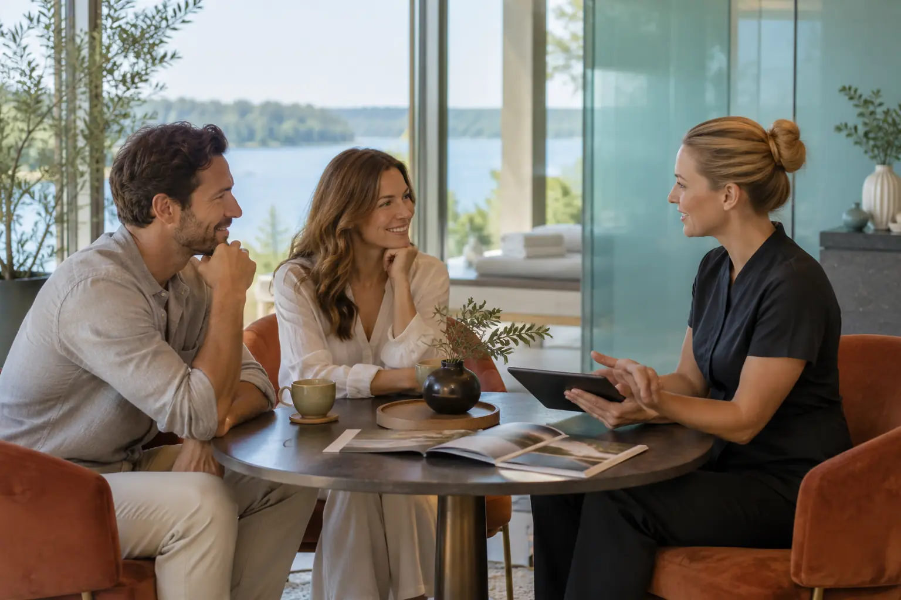

SPA poroms: du specialistai, privatumas ir procedūrų derinimas
Autorius: Madbeauty redakcija · 2026 m. gruodžio 27 d. 10:00 Lietuvos laiku
Palyginame du datuotus SPA VILNIUS pasiūlymus poroms ir parodome, kaip atskirti bendrą ritualą nuo vienalaikių procedūrų, nepadarant prielaidų apie specialistų grafiką ar privatumą.

SPA pasiūlymas dviem gali būti sudarytas iš bendrų ar atskirų procedūrų. Vien pavadinimas „dviem“ nepasako, ar abu žmonės procedūras gaus tuo pačiu metu, ar dirbs du specialistai. Rinkitės pagal tai, kokios procedūros įtrauktos ir ar paslaugos aprašas patvirtina jums tinkamą laiką bei privatumo sąlygas.
Dvi procedūros ar bendras ritualas
Palyginkite ne vien pavadinimą, bet ir paketo sudėtį. 2026 m. spalio 12 d. SPA VILNIUS meniu nurodė „SPA poilsį dviese“ už 295 Eur, trukmė – 105 min. Apraše išvardyta 15 min. vonia dviem, 60 min. aromaterapinis viso kūno masažas, 30 min. pėdų masažas dviem ir poilsis. Į kainą taip pat įtraukti chalatai, rankšluosčiai ir šlepetės. Tai vieno teikėjo, tą dieną patikrintas pasiūlymas, o ne rinkos kainos vidurkis ar Madbeauty paslauga: SPA VILNIUS · SPA poilsis dviese.
To paties teikėjo 2026 m. spalio 12 d. meniu „Ajurvedinis relaksacinis ritualas dviem“ kainavo 175 Eur, o nurodyta trukmė – 95 min. Apraše minimos vonia, viso kūno masažas ir poilsis, tačiau kiek minučių skiriama kiekvienai daliai, nenurodyta: SPA VILNIUS · ajurvedinis ritualas dviem.
Šių dviejų pavyzdžių skirtumas – 120 Eur ir 10 min. Jis nepaaiškina, ar vienas pasiūlymas vertingesnis: pirmojo aprašas detaliau išskaido dalis, o antrojo komponentų minučių paskirstymo nepateikia. Prieš lygindami, pasitikrinkite, ar jums svarbiau aiškiai įvardytos atskiros procedūros, ar vieno ritualo seka.
Vienalaikis darbas ir laikas
Pasiūlymo trukmė nėra įrodymas, kad kiekviena procedūra vyks vienu metu. „Dviem“ gali apibūdinti visam paketui skirtą pasiūlymą, bet savaime nepatvirtina dviejų specialistų, atskirų darbo vietų ar vienalaikio masažo. Tai turi aiškiai patvirtinti pats teikėjas.
Iliustracinis laiko skaičiavimas: jei abu paketai prasidėtų 10:00 ir meniu nurodyta bendra trukmė būtų skaičiuojama nuo šio laiko, 105 min. paketas baigtųsi 11:45, o 95 min. paketas – 11:35. Tai tik trukmės aritmetika, ne patvirtintas vizito grafikas. Ji neparodo, kiek laiko kiekvienas žmogus praleis procedūroje, ar lauksite vienas kito, ar į trukmę įskaičiuotas persirengimas ir poilsis.
- Jei norite procedūras patirti kartu, paprašykite patvirtinti, kurios dalys vyksta vienu metu ir ar abiem žmonėms skiriamas tas pats laikas.
- Jei jums svarbiau atskiros procedūros, išsiaiškinkite, ar jos vyksta tuo pačiu metu, ar paeiliui, ir kaip tokiu atveju skaičiuojama viso apsilankymo trukmė.
- Jei planuojate kelionę ar kitą veiklą po vizito, pasitikrinkite viso apsilankymo laiką, įskaitant atvykimą, persirengimą ir galimą laukimą; vien procedūros trukmė šių dalių nepatvirtina.
Privatumas – konkrečios sąlygos, ne paketo pavadinimas
Poreikiai gali skirtis: vieni nori būti vienoje erdvėje, kiti – daugiau atskirties. Prieš rezervuodami susitarkite, kur vyks procedūros, ar persirengimo ir poilsio erdvė bendra, kas bus kambaryje procedūros metu ir kaip teikėjas atsižvelgs į jūsų privatumo pageidavimus. Paklauskite ir apie avansą, keitimo bei atšaukimo sąlygas – jų negalima nustatyti vien iš ritualo aprašo.
Kaip palyginti du pasiūlymus
Prieš rinkdamiesi užsirašykite keturis punktus: įtrauktos procedūros, bendra nurodyta trukmė, ar procedūros vyksta kartu, ir privatumo sąlygos. Tada palyginkite šią informaciją su savo norimu apsilankymu. Jei apraše trūksta atsakymo, pažymėkite jį kaip nepatvirtintą, o ne spręskite iš žodžių „ritualas“ ar „dviem“.
Jei pirmiausia norite suprasti skirtingus SPA pasiūlymų formatus, skaitykite „SPA gidas: ritualas, pirtis ir privatus apsilankymas nėra tas pats“.
Procedūrų aprašai kataloge: SPA ritualas poroms. Miestą ir realaus teikėjo pasiūlymą pasirinkite kataloge, kai tokia pasiūla pateikta.
Susiję gidai
Šaltiniai
- SPA VILNIUS · SPA poilsis dviese · www.spavilnius.lt
- SPA VILNIUS · ajurvedinis ritualas dviem · www.spavilnius.lt